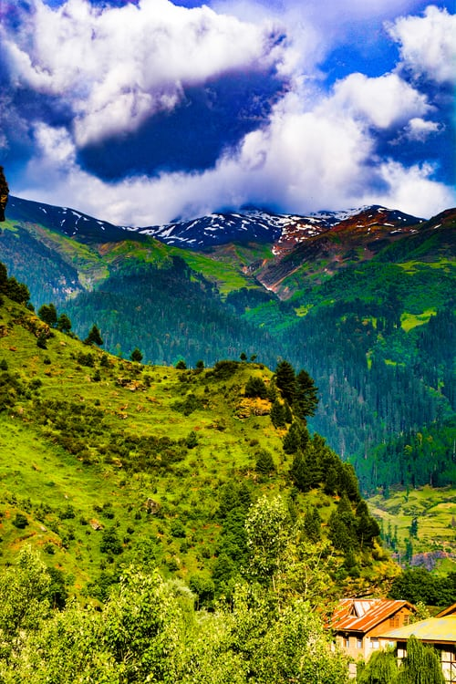

October 16 2019
Places to visit
Solang Valley is quiet and is best approached by road. The drive up to Solang is extremely picturesque.
Once you are there, try out some Chinese food from the local roadside shacks, and enjoy the views.
Swaying eucalyptus, lovely roads, sweet little eateries, small kitschy market places,
serve your favourite continental food at unbelievably low prices, the serenity of Old
serve your favourite continental food at unbelievably low prices, the serenity of Old Manali is only disturbed by twittering birds and the sound
Located in Naggar Town, amidst breathtaking forested hills, the Naggar Castle is a magnificent
historical edifice. Once the residence of Raja Sidh Singh of Kullu, this castle is an amalgamation of
Manali is an absolute delight for adventurers looking to take on the jagged hills. A great base camp for treks
Manali’s Mountaineering Institute offers several types of high altitude hiking and rock climbing opportunities.
Yoga-Trekking is another unique concept which combines spiritual wellness with physical well-being
Read More